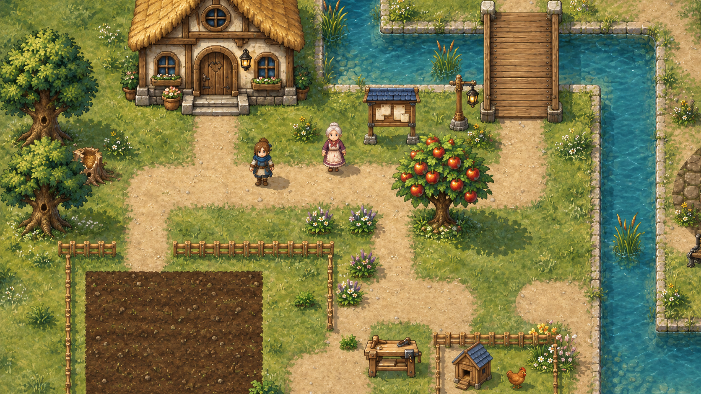
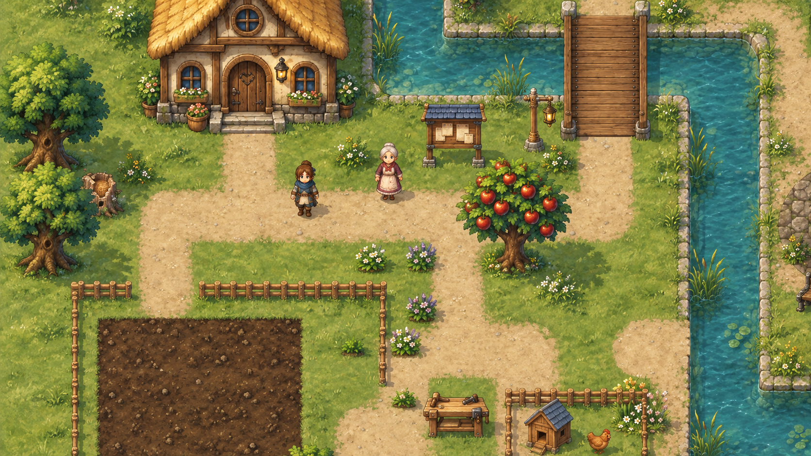
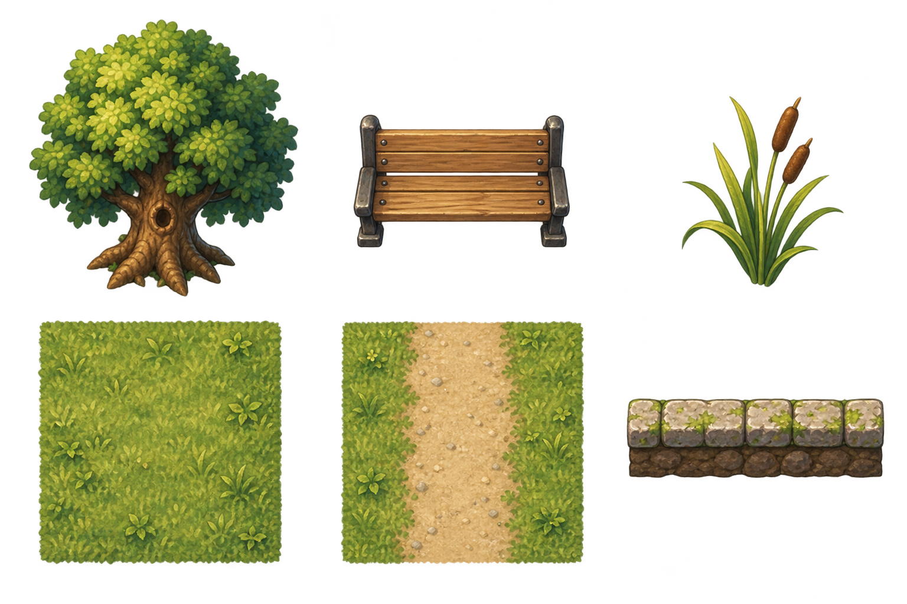
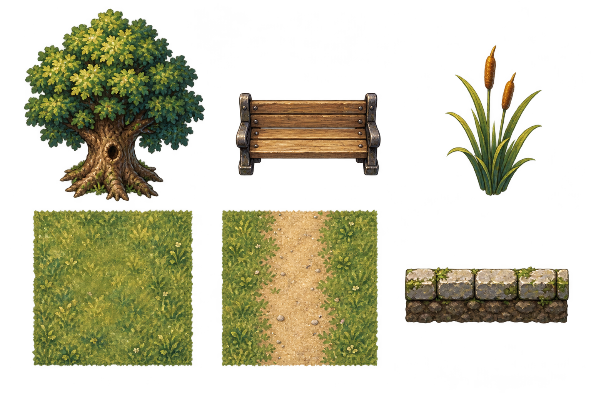

A · Спокойный рисунок
Мягче переходы света, меньше выражена кисть, чище силуэты и поверхности. Деревня выглядит светлее и спокойнее.
Выбрано пользователем 16 октября: «A мне понравился больше, помягче».Один участок деревни, два подхода к материалам. Здесь оцениваем форму, фактуру и читаемость. Выбран мягкий вариант A; игровые ресурсы соберём отдельно.


A · Спокойный рисунокB · Живописная фактураОба макета нарисованы по одной камере VBASE-004. Это художественная интерпретация исходника: мелкие сдвиги формы и поз не являются изменением игрового уровня.
Мягче переходы света, меньше выражена кисть, чище силуэты и поверхности. Деревня выглядит светлее и спокойнее.
Выбрано пользователем 16 октября: «A мне понравился больше, помягче».Выразительнее кора, камень и грунт, темнее теневые массы. Больше ощущения нарисованного мира и возраста материалов.
При переносе нужно сдержать мелкую фактуру травы, чтобы она не спорила с лутом и персонажами.Дерево, лавка вниз к игроку, камыш, трава, тропа и прямой берег. Ниже — проба небольшого экранного размера; затем исходные листы. Это образцы стиля, ещё не готовые атласы или бесшовные тайлы.
Лист A · прозрачный PNG

Лист B · прозрачный PNG
